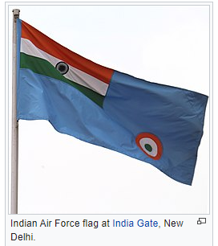
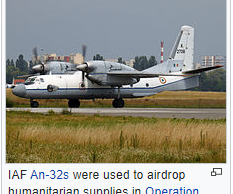

Since 1950 the IAF has been involved in four wars with neighboring Pakistan and one with the People's Republic of China. Other major operations undertaken by the IAF include Operation Vijay, Operation Meghdoot, Operation Cactus and Operation Poomalai. The IAF's mission expands beyond engagement with hostile forces, with the IAF participating in United Nations peacekeeping missions.
 The President of India holds the rank of Supreme Commander of the IAF. As of 1 July 2017, 139,576 personnel are in service with the Indian Air Force.The Chief of Air Staff, an air chief marshal, is a four-star officer and is responsible for the bulk of operational command of the Air Force. There is never more than one serving ACM at any given time in the IAF. The rank of Marshal of the Air Force has been conferred by the President of India on one occasion in history, to Arjan Singh. On 26 January 2002 Singh became the first and so far, only five-star rank officer of the IAF.
Mission
Defence of India and every part there of including preparation for defence and all such acts as may be conducive in times of war to its prosecution and after its termination to effective demobilisation.
In practice, this is taken as a directive meaning the IAF bears the responsibility of safeguarding Indian airspace and thus furthering national interests in conjunction with the other branches of the armed forces. The IAF provides close air support to the Indian Army troops on the battlefield as well as strategic and tactical airlift capabilities. The Integrated Space Cell is operated by the Indian Armed Forces, the civilian Department of Space, and the Indian Space Research Organisation. By uniting the civilian run space exploration organizations and the military faculty under a single Integrated Space Cell the military is able to efficiently benefit from innovation in the civilian sector of space exploration, and the civilian departments benefit as well.[clarification needed.
 The Indian Air Force, with highly trained crews, pilots, and access to modern military assets provides India with the capacity to provide rapid response evacuation, search-and-rescue (SAR) operations, and delivery of relief supplies to affected areas via cargo aircraft. The IAF provided extensive assistance to relief operations during natural calamities such as the Gujarat cyclone in 1998, the tsunami in 2004, and North India floods in 2013. The IAF has also undertaken relief missions such as Operation Rainbow in Sri Lanka.
History
A Westland Wapiti, one of the first aircraft of the Indian Air Force.
The Indian Air Force was established on 8 October 1932 in British India as an auxiliary air force of the Royal Air Force. The enactment of the Indian Air Force Act 1932[19][20] stipulated out their auxiliary status and enforced the adoption of the Royal Air Force uniforms, badges, brevets and insignia.[21] On 1 April 1933, the IAF commissioned its first squadron, No.1 Squadron, with four Westland Wapiti biplanes and five Indian pilots. The Indian pilots were led by British RAF Commanding officer Flight Lieutenant (later Air Vice Marshal) Cecil Bouchier.
During World War II, the IAF played an instrumental role in halting the advance of the Japanese army in Burma, where the first IAF air strike was executed. The target for this first mission was the Japanese military base in Arakan, after which IAF strike missions continued against the Japanese airbases at Mae Hong Son, Chiang Mai and Chiang Rai in northern Thailand.
The IAF was mainly involved in strike, close air support, aerial reconnaissance, bomber escort and pathfinding[citation needed] missions for RAF and USAAF heavy bombers. RAF and IAF pilots would train by flying with their non-native air wings to gain combat experience and communication proficiency. IAF pilots participated in air operations in Europe as part of the RAF.
During the war, the IAF experienced a phase of steady expansion. New aircraft added to the fleet included the US-built Vultee Vengeance, Douglas Dakota, the British Hawker Hurricane, Supermarine Spitfire, and Westland Lysander.
In recognition of the valiant service by the IAF, King George VI conferred the prefix "Royal" in 1945. Thereafter the IAF was referred to as the Royal Indian Air Force. In 1950, when India became a republic, the prefix was dropped and it reverted to being the Indian Air Force.
First years of independence (1947–1950)
Refugees awaiting evacuation by IAF Dakota on Poonch airstrip, December 1947.
After it became independent from the British Empire in 1947, British India was partitioned into the new states of the Dominion of India and the Dominion of Pakistan. Along the lines of the geographical partition, the assets of the air force were divided between the new countries.
India's air force retained the name of the Royal Indian Air Force, but three of the ten operational squadrons and facilities, located within the borders of Pakistan, were transferred to the Royal Pakistan Air Force.The RIAF Roundel was changed to an interim 'Chakra' roundel derived from the Ashoka Chakra.
Around the same time, conflict broke out between them over the control of the princely state of Jammu & Kashmir. With Pakistani forces moving into the state, its Maharaja decided to accede to India in order to receive military help. The day after, the Instrument of Accession was signed, the RIAF was called upon to transport troops into the war zone. And this was when a good management of logistics came into help. This led to the eruption of full-scale war between India and Pakistan, though there was no formal declaration of war. During the war, the RIAF did not engage the Pakistan Air Force in air-to-air combat; however, it did provide effective transport and close air support to the Indian troops.
An IAF Consolidated B-24 Liberator heavy bomber over the Deccan plateau in the early 1950s. When India became a republic in 1950, the prefix 'Royal' was dropped from the Indian Air Force. At the same time, the current IAF roundel was adopted.
Congo crisis and Annexation of Goa (1960–1961)
The IAF saw significant conflict in 1960, when Belgium's 75-year rule over Congo ended abruptly, engulfing the nation in widespread violence and rebellion.[30] The IAF activated No. 5 Squadron, equipped with English Electric Canberra, to support the United Nations Operation in the Congo. The squadron started undertaking operational missions in November. The unit remained there until 1966, when the UN mission ended. Operating from Leopoldville and Kamina, the Canberras soon destroyed the rebel Air Force and provided the UN ground forces with its only long-range air support force.
In late 1961, the Indian government decided to attack the Portuguese colony of Goa after years of disagreement between New Delhi and Lisbon. The Indian Air Force was requested to provide support elements to the ground force in what was called Operation Vijay. Probing flights by some fighters and bombers were carried out from 8–18 December to draw out the Portuguese Air Force, but to no avail. On 18 December, two waves of Canberra bombers bombed the runway of Dabolim airfield taking care not to bomb the Terminals and the ATC tower. Two Portuguese transport aircraft (a Super Constellation and a DC-6) found on the airfield were left alone so that they could be captured intact. However the Portuguese pilots managed to take off the aircraft from the still damaged airfield and made their getaway to Portugal. Hunters attacked the wireless station at Bambolim. Vampires were used to provide air support to the ground forces. In Daman, Mystères were used to strike Portuguese gun positions. Ouragans (called Toofanis in the IAF) bombed the runways at Diu and destroyed the control tower, wireless station and the meteorological station. After the Portuguese surrendered the former colony was integrated into India.
Kargil War (1999)
On 11 May 1999, the Indian Air Force was called in to provide close air support to the Indian Army at the height of the ongoing Kargil conflict with the use of helicopters. The IAF strike was code named Operation Safed Sagar.[70] The first strikes were launched on 26 May, when the Indian Air Force struck infiltrator positions with fighter aircraft and helicopter gunships. The initial strikes saw MiG-27s carrying out offensive sorties, with MiG-21s and later MiG-29s providing fighter cover. The IAF also deployed its radars and the MiG-29 fighters in vast numbers to keep check on Pakistani military movements across the border. Srinagar Airport was at this time closed to civilian air-traffic and dedicated to the Indian Air Force.
 On 27 May, the Indian Air Force suffered its first fatality when it lost a MiG-21 and a MiG-27 in quick succession. The following day, while on an offensive sortie, a Mi-17 was shot down by three Stinger missiles and lost its entire crew of four. Following these losses the IAF immediately withdrew helicopters from offensive roles as a measure against the threat of Man-portable air-defence systems (MANPAD). On 30 May, the Mirage 2000s were introduced in offensive capability, as they were deemed better in performance under the high-altitude conditions of the conflict zone. Mirage 2000s were not only better equipped to counter the MANPAD threat compared to the MiGs, but also gave IAF the ability to carry out aerial raids at night. The MiG-29s were used extensively to provide fighter escort to the Mirage 2000. Radar transmissions of Pakistani F-16s were picked up repeatedly, but these aircraft stayed away. The Mirages successfully targeted enemy camps and logistic bases in Kargil and severely disrupted their supply lines. Mirage 2000s were used for strikes on Muntho Dhalo and the heavily defended Tiger Hill and paved the way for their early recapture. At the height of the conflict, the IAF was conducting over forty sorties daily over the Kargil region. By 26 July, the Indian forces had successfully repulsed the Pakistani forces from Kargil.
On 27 May, the Indian Air Force suffered its first fatality when it lost a MiG-21 and a MiG-27 in quick succession. The following day, while on an offensive sortie, a Mi-17 was shot down by three Stinger missiles and lost its entire crew of four. Following these losses the IAF immediately withdrew helicopters from offensive roles as a measure against the threat of Man-portable air-defence systems (MANPAD). On 30 May, the Mirage 2000s were introduced in offensive capability, as they were deemed better in performance under the high-altitude conditions of the conflict zone. Mirage 2000s were not only better equipped to counter the MANPAD threat compared to the MiGs, but also gave IAF the ability to carry out aerial raids at night. The MiG-29s were used extensively to provide fighter escort to the Mirage 2000. Radar transmissions of Pakistani F-16s were picked up repeatedly, but these aircraft stayed away. The Mirages successfully targeted enemy camps and logistic bases in Kargil and severely disrupted their supply lines. Mirage 2000s were used for strikes on Muntho Dhalo and the heavily defended Tiger Hill and paved the way for their early recapture. At the height of the conflict, the IAF was conducting over forty sorties daily over the Kargil region. By 26 July, the Indian forces had successfully repulsed the Pakistani forces from Kargil.